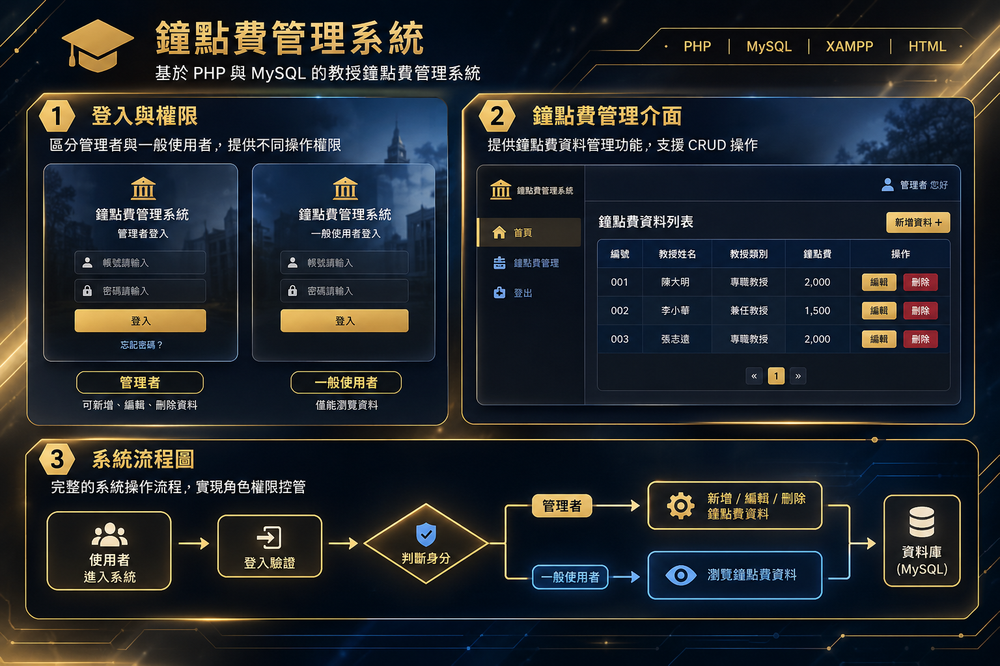

鐘點費管理系統
大學課程期末個人實作，使用 PHP 與 MySQL 建立鐘點費管理系統， 練習資料庫串接、使用者登入驗證、角色權限管理及基本資料維護功能。
System Preview
系統介面與操作流程示意

本圖為依據課程實作功能整理之系統設計示意圖， 用於呈現系統架構與操作概念，非原始系統操作截圖。
01 / Project Overview
專案概述
本專案為大學課程期末實作，由個人獨立完成。 以 PHP 作為後端開發語言，搭配 MySQL 資料庫， 建立教授鐘點費管理系統。
系統區分專職教授與兼任教授，依不同類別處理鐘點費資料， 並透過管理者與一般使用者的角色區分， 實現不同的資料操作權限。
本專案以練習 PHP 後端開發及資料庫應用為主要目的， 著重於基本資料管理與使用者權限概念。
02 / Core Features
核心功能
01. 使用者登入
建立帳號登入機制，依照使用者身分提供相對應的操作權限。
02. 角色權限管理
區分管理者與一般使用者，管理者可維護資料， 一般使用者僅能瀏覽資料。
03. 鐘點費資料管理
透過資料庫進行資料新增、查詢、修改及刪除等基本操作。
04. 教授類別區分
區分專職教授與兼任教授，依照不同類別處理鐘點費資料。
03 / Access Control
使用者角色與操作權限
| 操作功能 | 管理者 | 一般使用者 |
|---|---|---|
| 瀏覽資料 | ✓ | ✓ |
| 新增資料 | ✓ | — |
| 編輯資料 | ✓ | — |
| 刪除資料 | ✓ | — |
04 / Technical Skills
技術應用與學習成果
PHP 後端程式設計
運用 PHP 處理使用者操作與系統資料管理。
MySQL 資料庫串接
透過 PHP 與 MySQL 進行資料讀取及維護。
CRUD 基本操作
實作資料新增、查詢、修改與刪除功能。
角色權限管理
依照登入角色區分可執行的資料操作。